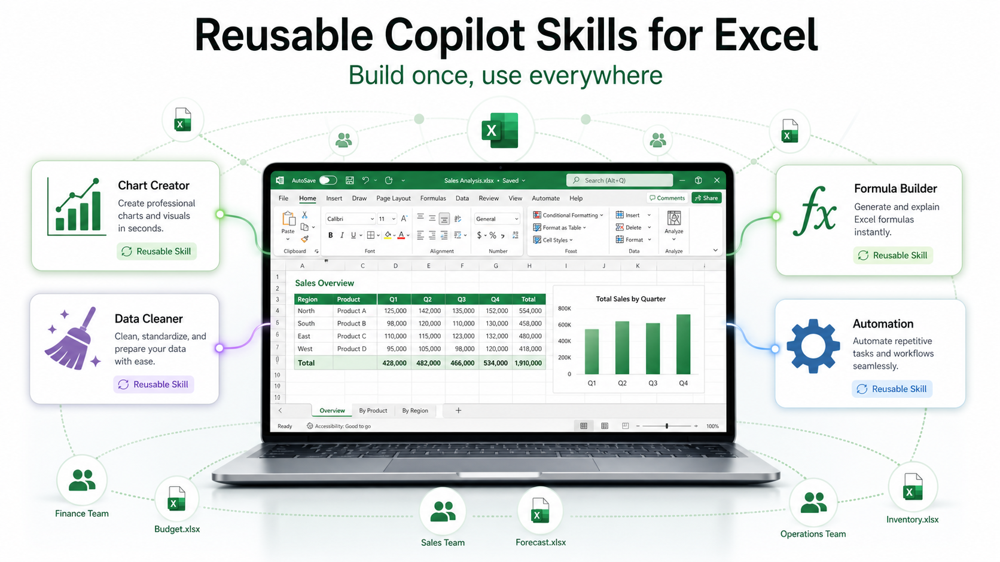
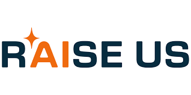

Artificial Insights
📅 Jul 02, 2026 · Issue #12
In This Issue

OpenAI ships GPT-5.6, but only through a narrow door
OpenAI rolled out the GPT-5.6 family this week, but not to everyone. Just a small group of approved partners got access. The model is better, and the improvement will be obvious when you test it, from what I'm seeing. However, the real story is the access shift. For every prior model update, it was released to everyone at the same time, rather than just a group of preferred partners. This looks like OpenAI responding to federal pressure to scrutinize frontier models before a wide release, and I don't love where it leads. When the smartest technology goes first to hand-picked organizations instead of the general public, that sets a dangerous precedent.
Anthropic's recent Fable and Mythos fight turns model access into an agency issue

Anthropic's recent Fable 5 and Mythos 5 access dispute with the U.S. government was one of the biggest AI stories of the last month. The whole story is soap-opera-worthy, but at the heart of everything, it is a model safety fight between Anthropic and folks in the US Goverment with only rudimentary understanding of how models work. Model availability is the bigger problem: national security, compliance, and business continuity all hinge on whether any organization still has access to the same model tomorrow as they do today. Fable and Mythos were available for three days before access was pulled. Some companies reported losing $1 million per day as a result of this loss of access. If you built critical workflows on a frontier model, you need to be certain that you're not going to lose access.
OpenAI's Jalapeno chip points at the real cost problem

OpenAI built and rolled out its first custom chip to make AI cheaper and more efficient to run. The good news is that plenty of other companies are working on the same problem because power demand and costs for AI keep climbing. If chips like Jalapeno work as advertised, data center demand could drop by up to half. I'm hopeful OpenAI and the others get there. When the conversation shifts to the economics of AI, as we are here, I keep coming back to this quote: "In the long run, everything is a toaster. Once economics takes over, differentiation is gone." I think we're approaching that point.

🛠️ Gemini study notebooks turn source material into cool quizzes
The News: Gemini rolled out a study notebook workflow that is lightweight and flexible. The live demo video is below, but is built around a simple idea: give AI a body of source material, then use it to organize learning, explain concepts, and generate practice. For learners, this tool just keeps getting better and better.
My Take: Gemini is behind in implementing tools into business workflows, but they are way ahead in consumer-based ideas like this.
🛠️ Microsoft turns repeatable Excel work into shareable AI skills

The News: Microsoft is rolling out reusable Copilot Skills for Excel, letting teams turn common spreadsheet work into structured, repeatable skill files. These may be familiar if you've used skills in ChatGPT, Gemini, or Claude already. They are very similar and are designed to help with routine work like variance analysis, monthly reporting, or completing reports.
My Take: Copilot has been very slow to add this functionality, but it's very useful. As someone who has used dozens of these skills, I can assure you that these will be helpful. Some non-Excel ones I use are: email tone polisher, weekly news accumulator, and data report explainer (that one is excel).

🔬 The AI race is moving from smarter models to better context

The main theme in this issue is not which model wins a benchmark. It is that useful AI has moved into the work itself — documents, spreadsheets, PowerPoint, coding, search, meetings, and repeatable workflows. The tools get better when they can see more of the situation, and that visibility comes from the context we give them for the task at hand. Carrying that context from tool to tool is just as important as picking the right model. Maybe you've already encountered this: you use ChatGPT to start a conversation, and then you need to move the conversation in to Word or Copilot. However, they don't know all of the context that you have already covered with ChatGPT... so you have to re-explain everything to the new model. The solution is to carry that context from one app to the next.
That is both the opportunity and the trap. AI gets better when it has context, but context is also where the risk lives. A tool that can see the right document can be helpful. A tool that sees too much, remembers too much, or acts without review can become a governance problem, even though it has a pleasant interface.
Let's talk a little bit about what context is and how it works. Context is the surrounding information (history, constraints, user data, knowledge, environment) that gives the model data in order to help it generate relevant, accurate responses. By having context, the model can build on the data rather than treating each input in isolation. When we are using a model and ask questions like "what information does this tool need, and what should it definitely not have?", that is the context we need to manage. The reason this is getting more and more important is that the strongest AI tools are moving toward the places where work already happens, and they consume context automatically at times. We see this in the Chrome browser with the AI mode and in Copilot with every Microsoft App.
Gemini study notebooks use source material as context to support learning. Copilot Skills use context to help create reusable office workflows. That is the upside of context-aware tools: the AI is working from the material and workflow we actually care about, not from a blank chat box.
The downside is that context management strategy only works if you can still use the tool — and that is no longer guaranteed. The GPT-5.6 and Anthropic access stories point out that who gets the new model, and under what rules, and with what strings attached are the new normal. Anthropic's Fable fight also showed that access can come with mandatory data retention, meaning that traffic you expected to stay private may be retained by Anthropic. When the best tool is not available to everyone, or the terms change overnight, organizations need habits that are bigger than any one vendor: define the task, control the context, check the output, and keep a fallback plan.

🎓 AI companies fund the workforce people strategy

A new nonprofit called RAISE US has already raised $500 million toward a $1 billion goal to help states prepare workers for AI disruption. Former Commerce Secretary Gina Raimondo framed it like this: America has a technology strategy for the AI race, but not yet a people strategy for workers. The same firms automating the work are now funding the airbag, and that tension is the whole story.
🎓 Workforce AI readiness is finally getting more support

Let's talk a bit more about the RAISE US story as it relates to workforce preparation, which is already part of our mission. If AI changes job tasks faster than job titles, then students and employees will need more than tool availability. They will need AI understanding, judgment, verification habits, data boundaries, and the confidence to learn new workflows and tools. I welcome the help from RAISE US in conveying AI literacy to the workforce.

🎬 Gemini quizzes with a study notebook
This week's demo looks at Gemini's NotebookLM and their quiz workflow: give it source material, let it organize the learning space, and then use it to generate quiz-style practice. What I like about this tool is that the questions are tied to a body of material that you supply, which makes the workflow closer to a study coach.
The good news is that it's pretty straightforward: start with a public article, a handout, or study content; generate practice questions; and then check the answers against the source. Also, it does not hallucinate.


💥 Is something went wrong with the drone show?
A drone-pyrotechnics show in Liuyang, China, took a dangerous turn when a technical malfunction caused hundreds of illuminated drones or attached payloads to fall from the sky. What began as a coordinated aerial display quickly unraveled, as synchronized light formations gave way to cascading fireballs, thick smoke, and burning debris.
Here is some witness footage that captured the rather sudden shift from a controlled spectacle to a chaotic scene, with flaming fragments descending toward nearby structures and spectators. Several ground fires were reported upon impact as well.
I'm looking forward to the drone show in Stevens Point this weekend, but maybe I'll sit off to the side... just in case!


Build review questions from a low-risk source

Try this with a topic you're looking to bone up on if you don't want to go through all the work of creating a NotebookLM — use Gemini (even the free version). Provide the sources you want to use for learning, and try the following.
The Prompt:
""I want to use this source material to study or review the topic. Create five quiz questions that check understanding, not memorization. For each question, include the correct answer, a brief explanation, and the exact part of the source that supports the answer. After that, list two places where the source might be unclear or where a human should verify the information.""
Three practical ways to start thinking about AI context
- Pick one routine task you already do, such as summarizing notes, drafting an email, studying a policy, or creating review questions. Ask what information the AI would need to do that task well.
- Before using an AI tool, ask these questions: What can it see? What can it change? What does it remember? How would I check its work? Will I still have this tool on these terms six months from now?